2.9 Contrastes de normalidad
2.9.1 Revisión del caso univariante
Se han desarrollado muchos procedimientos para el contraste de la normalidad en el caso univariante. Un procedimiento gráfico sencillo para evaluar la normalidad de un conjunto de observaciones de una variable es el \(Q\)-\(Q\) plot, que compara los cuantiles de la muestra con los cuantiles de la distribución normal univariante. En la Figura 2.8 se muestran los \(Q\)-\(Q\) plots correspondientes a muestras generadas a partir de distintas distribuciones. Cuando los puntos se acercan a la línea recta representada (como en la primera gráfica), no hay evidencia de falta de normalidad. La desviación de los puntos con respecto a la recta indica falta de normalidad. Por ejemplo, un \(Q\)-\(Q\) plot como el de los datos generados a partir de la \(t\) de Student, es típico en datos que provienen de distribuciones con colas más pesadas que la Normal. Para datos que provienen de distribuciones con colas menos pesadas que la Normal se suelen obtener \(Q\)-\(Q\) plots como el de los datos uniformes en la Figura 2.8. Un \(Q\)-\(Q\) plot como el de los datos generados a partir de la \(\chi^2\) es típico en datos que provienen de distribuciones asimétricas. Si bien el \(Q\)-\(Q\) plot nos puede servir para valorar de forma visual la normalidad de una muestra, es adecuado hacer uso de procedimientos objetivos. Veremos a continuación algunos de dichos procedimientos, aquellos que se extienden de manera más natural al caso multivariante. Serán los métodos basados en la asimetría, la kurtosis, y el test de Shapiro-Wilk.
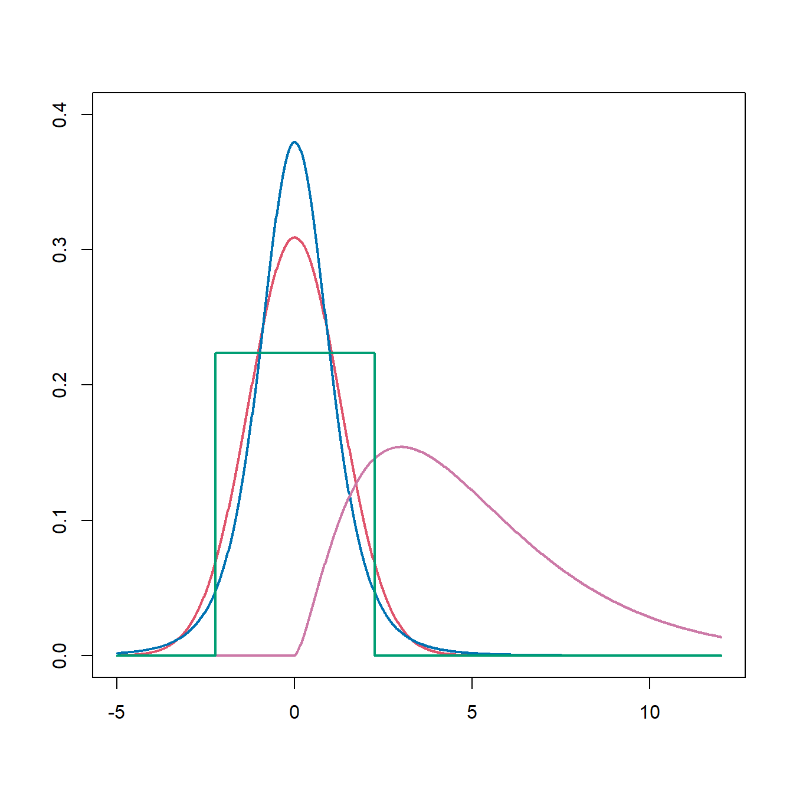
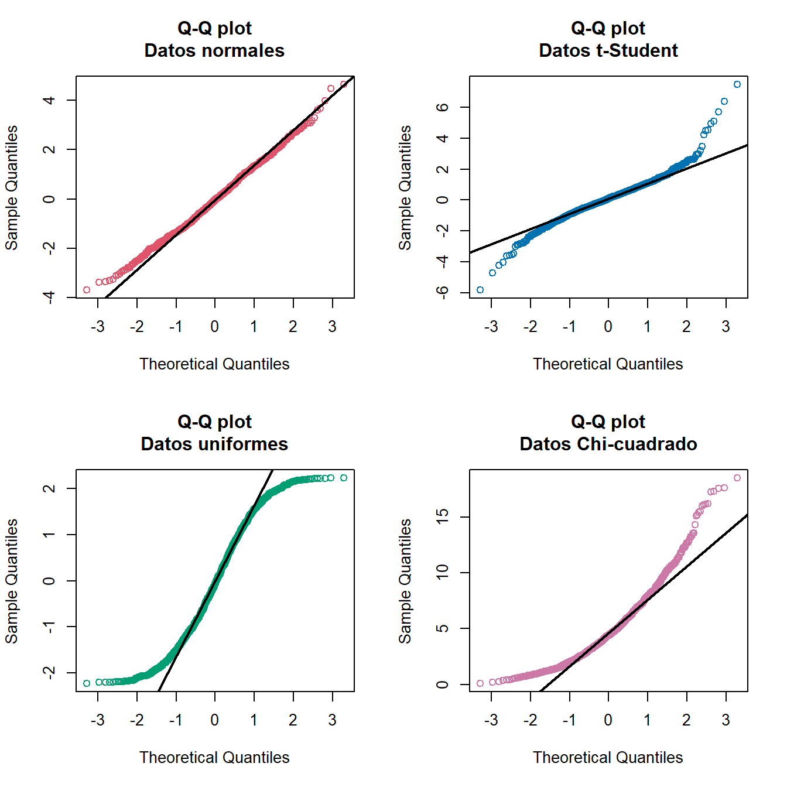
Figura 2.8: Funciones de densidad correspondientes a una distribución normal de media cero y varianza \(5/3\) (rojo), \(t\) de Student con 5 grados de libertad (azul), uniforme en \(\left[-\sqrt{5},\sqrt{5}\right]\) (verde) y \(\chi^2\) con 5 grados de libertad (rosa) y \(Q\)-\(Q\) plots correspondientes a muestras generadas a partir de dichas distribuciones.
2.9.1.1 Test basado en la asimetría
Es bien conocido que la distribución normal es simétrica en torno a su media. Como además, la forma más común de desviarse respecto de la normalidad es por falta de simetría, por ejemplo en variables positivas, parece lógico construir un método de contraste en base a cierta medida de asimetría.
Si \(x_1,\ldots,x_n\) es una muestra aleatoria simple (observaciones independientes e idénticamente distribuidas), el coeficiente de asimetría muestral se define como
\[A=\frac{\frac{1}{n}\sum_{i=1}^n\left(x_i-\overline{x}\right)^3}{s^3}
=\frac{1}{n}\sum_{i=1}^n\left(\frac{x_i-\overline{x}}{s}\right)^3\]
siendo \(\overline{x}\) la media muestral y \(s^2\) la varianza muestral. El
coeficiente de asimetría es la media de las potencias cúbicas (también
llamado momento de orden tres) de los valores estandarizados. Al estar
estandarizados, habrá observaciones a ambos lados de la media,
manteniendo un equilibrio (en orden uno). Sin embargo, la potencia tres
que se emplea en el coeficiente de asimetría, rompe el equilibrio en
caso de distribución asimétrica. En la Figura 2.9 se muestran
los coeficiente de asimetría (para calcularlos puedes utilizar la
función skewness de la librería moments) de datos generados de
distintas distribuciones.
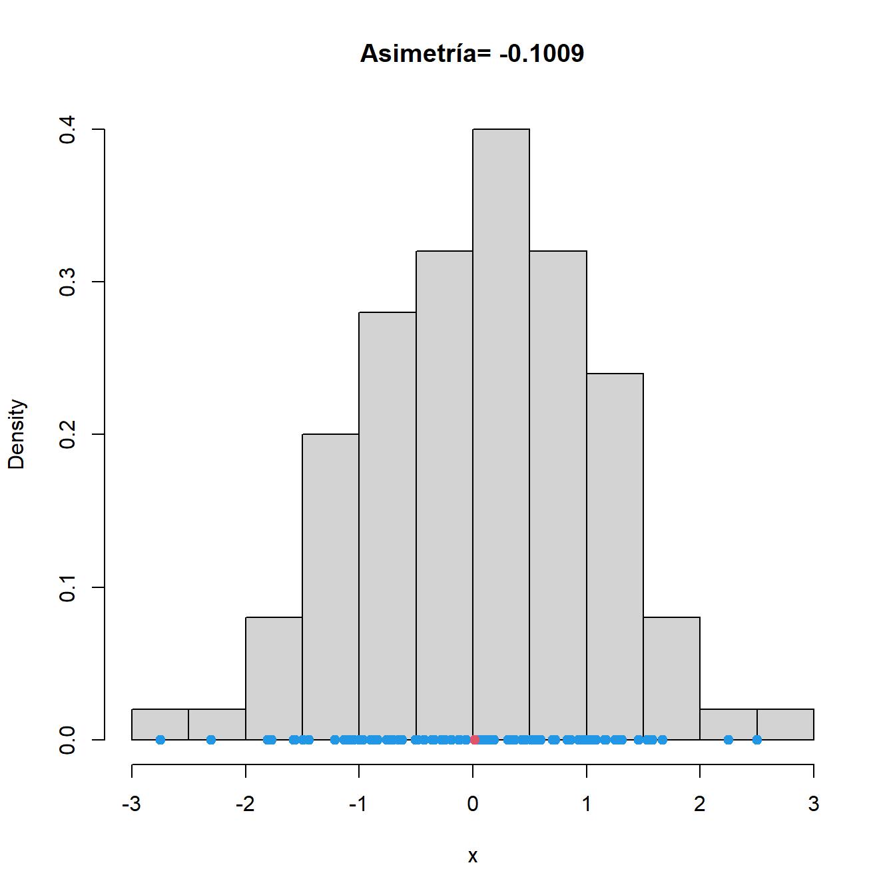
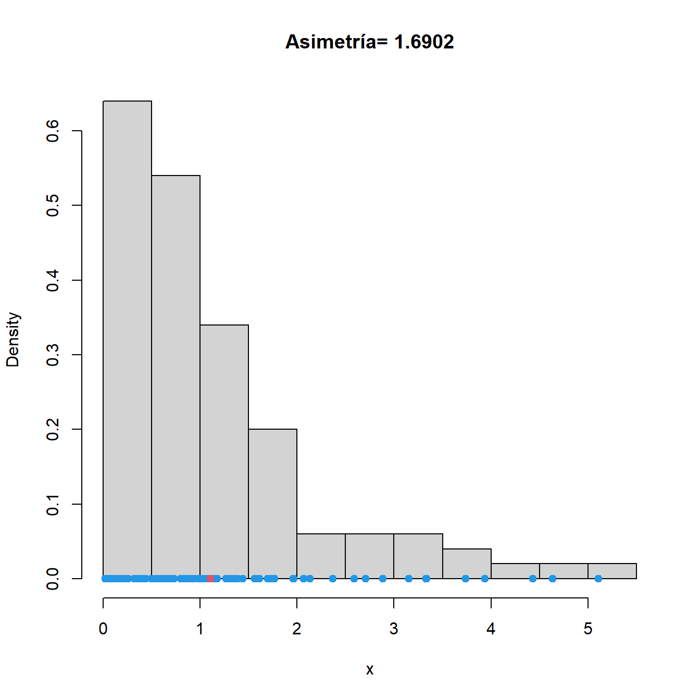
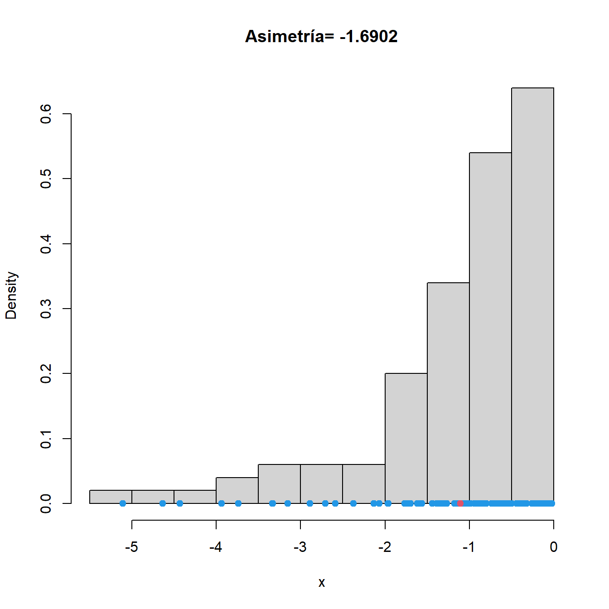
Figura 2.9: Histogramas y coeficiente de asimetría correspondientes a datos generados de una distribución normal (izquierda), de una exponencial (centro) y de los mismos datos exponenciales tras cambiarles el signo (derecha). Los datos se representan en azul. En rojo, media muestral.
Si la distribución de los datos muestrales es normal, entonces el coeficiente de asimetría tiene distribución asintótica normal de media cero y varianza \(6/n\), por lo que se puede emplear como estadístico de contraste el siguiente:
\[\sqrt{\frac{n}{6}}\ A\approx N(0,1)\]
Se rechazará la normalidad, en base al coeficiente de asimetría, cuando el estadístico anterior sea muy grande (en positivo o negativo), en comparación con los cuantiles de la \(N(0,1)\).
Ejemplo. Vamos a presentar los resultados del contraste de normalidad basado en asimetría aplicado a datos simulados de distintas distribuciones. Mostramos en primer lugar los valores del coeficiente de asimetría, el estadístico de contraste y nivel crítico para datos simulados de la distribución normal.
Como cabía esperar, la pequeña asimetría muestral de los datos normales no resulta significativa. Veamos ahora lo que ocurre cuando generamos datos de una distribución asimétrica como la exponencial.
2.9.1.2 Test basado en la kurtosis
Partimos de la muestra \(x_1,\ldots,x_n\). El momento de orden cuatro de los valores estandarizados se calcula como:
\[\frac{1}{n}\sum_{i=1}^n\left(\frac{x_i-\overline{x}}{s}\right)^4,\]
siendo \(\overline{x}\) la media muestral y \(s^2\) la varianza muestral. Recordemos que las características de posición se calculan mediante un momento de orden uno (la media), las de dispersión a través de un momento de orden dos (la varianza) y la asimetría con un momento de orden tres (el coeficiente de asimetría). El momento de orden cuatro permite medir características de forma, que son un refinamiento todavía más detallado en el análisis de la distribución. Si bien en algunos textos la kurtosis se define como el momento de orden 4, es más habitual definir la kurtosis como:
\[K=\frac{1}{n}\sum_{i=1}^n\left(\frac{x_i-\overline{x}}{s}\right)^4-3.\] En esta definición se resta tres para que el coeficiente valga cero en la distribución normal. Así definida, \(K\) también se conoce como exceso de kurtosis.
En la Figura 2.8 se representaban tres distribuciones con la misma media, desviación típica y asimetría (asimetría cero, pues son simétricas). Son la \(t\) de Student con 5 grados de libertad, la normal y la uniforme, ambas con la misma media y desviación típica que la \(t_5\). Para ello, se toma la normal con media cero y desviación típica \(\sqrt{5/3}\), y la uniforme entre \(-\sqrt{5}\) y \(\sqrt{5}\). Vemos que la distribución \(t\) de Student es la que presenta una mayor concentración de probabilidad en las proximidades de la media, así como en las colas (lejanías extremas)7. Esto hace que tenga un coeficiente de apuntamiento más grande. Por el contrario, la distribución uniforme es la que presenta menor densidad en las proximidades de la media, y carece de colas. En este caso, la densidad es más grande en los valores con desviaciones intermedias \((\mu-\sigma)\) y \((\mu+\sigma)\). Como resultado, el coeficiente de apuntamiento será más pequeño para la distribución uniforme. La distribución normal presenta un comportamiento intermedio entre la \(t_5\) y la uniforme.
Si una distribución tiene un apuntamiento similar al de la normal decimos que es mesocúrtica, si el apuntamiento es mayor se dice leptocúrtica, y si es menor se dice platicúrtica. La \(t\) de Student es una distribución leptocúrtica y la uniforme platicúrtica.
Volviendo al propósito de contraste de la normalidad, si estamos ante una distribución simétrica, podemos valorar una posible desviación del modelo normal en función de su apuntamiento o kurtosis. Rechazaremos la normalidad si la kurtosis muestral es mucho mayor o mucho menor que cero, que es lo que corresponde a la distribución normal.
Se puede demostrar que si la distribución de los datos muestrales es normal, entonces la kurtosis tiene distribución asintótica normal de media cero y varianza \(24/n\), por lo que se puede emplear como estadístico de contraste el siguiente:
\[\sqrt{\frac{n}{24}}\ K\approx N(0,1).\]
Se rechazará la normalidad, en base a la kurtosis, cuando el estadístico anterior sea muy grande (en positivo o negativo), en comparación con los cuantiles de la \(N(0,1)\).
Ejemplo. Vamos a extraer muestras simuladas de tamaño 100 de cada una de las tres distribuciones que se han comentado en esta sección, y cuyas densidades se representan en la Figura 2: \(t_5\) de Student, normal y uniforme. Aplicamos a continuación el contraste de normalidad basado en la kurtosis. En primer lugar, generamos datos de una normal con varianza \(5/3\):
> library(moments)
> n <- 100
> x <- rnorm(n, sd = sqrt(5/3))
> K <- kurtosis(x) - 3
> K
[1] 0.6656975Aplicamos ahora el contraste a una muestra generada a partir de una \(t_5\):
Por último, aplicamos el contraste a una muestra generada a partir de la distribución uniforme en el intervalo \(\left[-\sqrt{5},\sqrt{5}\right]\).
Los resultados son los que cabía esperar. Así, el coeficiente de apuntamiento muestral es próximo a cero para la normal, negativo para la uniforme y positivo para la \(t_5\). Al estandarizarlos, se obtienen cantidades comparables con la \(N(0,1)\), que arrojan los niveles críticos que se muestran en las salidas. Las discrepancias más significativas se obtienen con la \(t_5\) de Student.
2.9.1.3 Test de Shapiro-Wilk
Veamos ahora uno de los contrastes más utilizados para contrastar normalidad. Se trata del test de Shapiro -Wilk, que plantea como hipótesis nula que la muestra \(x_1,\ldots,x_n\) proviene de una población normal. Este procedimiento es más general, pues permite detectar tanto defectos de simetría como de kurtosis, o incluso de otro tipo no considerado por los tests anteriores. Consideremos los datos estandarizados
\[z_i=\frac{x_i-\overline{x}}{s}\qquad i\in\{1,\ldots,n\}.\]
El estadístico de Shapiro-Wilk se construye de la siguiente manera:
\[W=\sum_{i=1}^{[n/2]}a_{i,n} \left(z_{(n-i+1):n}-z_{i:n}\right)\]
siendo \(z_{1:n}<\ldots<z_{n:n}\) la muestra ordenada de los datos
estandarizados y \(a_{i,n}\) ciertas constantes. Consiste en calcular las
distancias entre los datos de la muestra ordenada, simétricos respecto
de la mediana, esto es, la distancia entre el primero y el último, el
segundo y el penúltimo, y así sucesivamente; en general el \(z_{i:n}\) y
el \(z_{(n-i+1):n}\). El propósito es comparar estas distancias con las
que habría en una muestra de observaciones normales. Podremos llevar a
cabo el test de Shapiro -Wilk en R mediante la función shapiro.test,
como se muestra en el siguiente ejemplo.
Ejemplo. Vamos a extraer muestras simuladas de tamaño 100 de cada una de las distribuciones vistas en las secciones anteriores: normal, \(\chi^2\), uniforme y \(t\) de Student, ver Figura 2.8. Los resultados del test de Shapiro-Wilk se muestran a continuación:
> n <- 30
> x1 <- rnorm(n, sd = sqrt(5/3))
> x2 <- rt(n, 5)
> x3 <- runif(n, -sqrt(5), sqrt(5))
> x4 <- rchisq(n, 5)
> shapiro.test(x1)
Shapiro-Wilk normality test
data: x1
W = 0.9515, p-value = 0.1854En los tres casos donde los datos no proceden de una distribución normal los niveles críticos conducen al rechazo de la normalidad.
2.9.2 Contraste de la normalidad multivariante
En esta sección veremos cómo se pueden extender los conceptos de asimetría y kurtosis al caso multivariante. Asimismo, también se verá la manera de extender el test de Shapiro-Wilk con datos multivariantes. Empezamos estudiando ciertos conceptos previos en relación con este tipo de contrastes.
2.9.2.1 Invariancia, estandarización, y distancias y ángulos de Mahalanobis
Sabemos que la normalidad se conserva frente a traslaciones y transformaciones lineales, esto es:
Para cualesquiera \(\bm{b}\) vector de dimensión \(d\) y \(\bm{A}\) matriz \(d\times d\) no singular,
\[\bm{x}\ \ \mbox{tiene distribución normal} \Leftrightarrow\bm{A}\bm{x}+\bm{b}\ \ \mbox{tiene distribución normal}\]
Por tanto, si estamos contrastando que el vector \(\bm{x}\) tenga distribución normal, tanta evidencia habrá a favor o en contra de esta hipótesis, si empleamos los datos de \(\bm{x}\) como si empleamos los datos transformados \(\bm{A}\bm{x}+\bm{b}\).
Diremos que un test de normalidad multivariante es invariante si proporciona los mismos resultados con los datos originales que con datos transformados por traslaciones o transformaciones lineales.
Nos parece que la invariancia es una propiedad deseable para un test de normalidad. Ahora, si somos libres de transformar los datos, se nos ocurre aplicar la estandarización multivariante, pues es una transformación que los simplifica al suprimirles la media y la matriz de covarianzas. Pasamos entonces de los datos originales \(\bm{x_1},\ldots,\bm{x_n}\) a los datos estandarizados:
\[\bm{z_i}=\bm{S^{-1/2}}\left(\bm{x_i}-\overline{\bm{x}}\right)\] siendo \(\overline{\bm{x}}\) la media muestral y \(\bm{S}\) la matriz de covarianzas muestral. La idea es que si los datos originales \(\bm{x_1},\ldots,\bm{x_n}\) provienen de una distribución normal, los datos estandarizados \(\bm{z_1},\ldots,\bm{z_n}\) deberían presentar una distribución normal estándar, esto es, deberían mostrar un aspecto esférico, sin especial predilección por unas direcciones frente a otras, y con mayor concentración en la zona central.
Las distancias de Mahalanobis de las observaciones al vector de medias se pueden expresar así:
\[r_{ii}=\left(\bm{x_i}-\overline{\bm{x}}\right)^\prime{}\bm{S}^{-1}\left(\bm{x_i}-\overline{\bm{x}}\right)=\bm{z_i}^\prime{}\bm{z_i}=\|\bm{z_i}\|^2.\]
Consideramos ahora los valores
\[r_{ij}=\left(\bm{x_i}-\overline{\bm{x}}\right)^\prime{}\bm{S}^{-1}\left(\bm{x_j}-\overline{\bm{x}}\right)=\bm{z_i}^\prime{}\bm{z_j}.\] Además, como \(\bm{z_i}^\prime{}\bm{z_j}\) representa un producto escalar de vectores, se tiene también
\[r_{ij}=\bm{z_i}^\prime{}\bm{z_j}=\|\bm{z_i}\|\cdot\|\bm{z_j}\|\cdot \cos(\theta_{ij})\] siendo \(\theta_{ij}\) el ángulo que forman las observaciones estandarizadas \(\bm{z_i}\) y \(\bm{z_j}\) en el espacio usual. El ángulo \(\theta_{ij}\) se conoce como ángulo de Mahalanobis que forman las observaciones \(\bm{x_i}\) y \(\bm{x_j}\) en el espacio original. En la Figura 2.10 se representa una muestra de observaciones, que han sido estandarizadas. Por tanto, las distancias y los ángulos de Mahalanobis coinciden con las distancias y ángulos ordinarias en esta representación. El punto central, representado en color azul, es la posición del vector de medias. En el gráfico se han destacado también dos puntos, denotados por (a) y (b), respectivamente.
Las longitudes de las flechas, que son sus distancias al vector de medias, serían las raíces cuadradas de sus valores \(r_{ii}\) y \(r_{jj}\). El valor \(r_{ij}\) para este par de puntos sería el producto de las longitudes, multiplicado por el coseno del ángulo que forman las dos flechas. Así, si el ángulo es de 90 grados, \(r_{ij}\) vale cero, si es menor de 90 grados \(r_{ij}\) es positivo, y si es mayor de 90 grados es negativo. De este modo, \(r_{ij}\) refleja si los dos puntos (a) y (b) están del mismo lado o si se encuentran en lados opuestos. Esto será utilizado en la sección siguiente para definir una medida de asimetría.
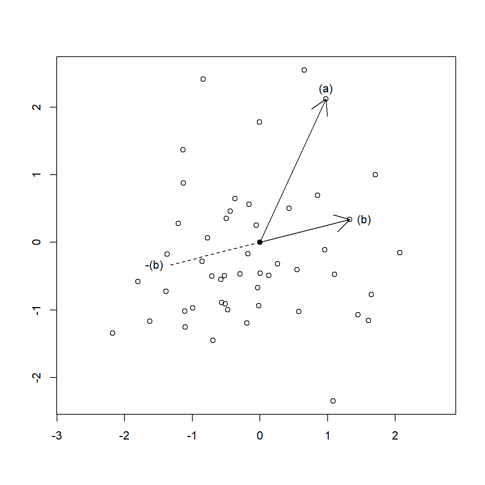
Figura 2.10: Representación de los valores \(r_{ij}\).
2.9.2.2 Tests basados en medidas de asimetría y kurtosis
Existen diversas formas de definir medidas de asimetría y kurtosis con datos multivariantes. Consideraremos aquí las introducidas por K. V. Mardia (1970).
2.9.2.2.1 Coeficiente de asimetría multivariante
Así, calcularemos la asimetría de la siguiente manera:
\[A_m=\frac{1}{n^2}\sum_{i=1}^n\sum_{j=1}^n r_{ij}^3\]
En la Figura 2.10 se ofrece una representación que resulta muy útil para interpretar los valores \(r_{ij}\). Como vimos en la sección anterior, \(r_{ij}\) es positivo si los dos puntos en cuestión, (a) y (b) en el gráfico, forman un ángulo inferior a 90 grados. Por el contrario, \(r_{ij}\) será negativo si el ángulo es superior a 90 grados. Siempre se cumple que
\[\sum_{i=1}^n r_{ij}=0=\sum_{j=1}^n r_{ij}\] esto es, se cancelan los valores positivos con los negativos, lo cual es muy comprensible, pues el vector de media ocupa la posición central. Esto también se cumplía en el caso univariante.
Sin embargo, al elevar al cubo los \(r_{ij}\), se desequilibra este balance. Para mantener el equilibrio, por cada punto, como el (b), tendría que haber otro punto, que se representa como -(b) en el gráfico, situado en la posición contraria a (b) respecto del vector de medias. Los puntos (b) y -(b) tendrían los mismos valores \(r_{ij}\) con el resto de la muestra, pero con signos cambiados. Al efectuar cualquier potencia impar, como el cubo, se cancelarían. Así, si cada punto de la muestra tuviera otro punto simétrico en la propia muestra, el coeficiente de asimetría valdría cero. En otro caso, si la simetría se cumple aceptablemente, el coeficiente sería sólo algo mayor que cero, mientras que si hay un comportamiento claramente distinto en lados opuestos, el coeficiente de asimetría sería más grande.
En la Figura 2.11 se presentan ejemplos de muestras bivariantes generadas a partir de diferentes distribuciones. Los puntos en negro representan los datos muestrales y en rojo se representa el vector de medias muestral y la elipse asociada a la matriz de covarianzas muestral.
Los dos primeros gráficos representan datos simulados de distintas distribuciones normales. Como se esperaba, en ambos casos el valor del coeficiente de asimetría muestral \(A_m\) se aproxima a cero ya que, a nivel teórico, la distribución normal multivariante es simétrica.
A continuación se representan datos bivariantes con marginales exponenciales e independientes. La asimetría del modelo se refleja en el valor del coeficiente de asimetría muestral. En el cuarto gráfico se han simulados tres grupos de datos normales multivariantes. Esto hace que la distribución de la muestra completa no sea normal. De hecho, la presencia de varios grupos es una causa muy común de falta de normalidad. También es común que produzca un efecto de asimetría, que permite detectar esa falta de normalidad. Por último, se han simulado observaciones uniformes en el cuadrado unidad. El modelo teórico es simétrico y de hecho el valor muestral de \(A_m\) es próximo a cero.
Como test de normalidad, y dado que la distribución normal es simétrica, rechazaremos la normalidad, por falta de simetría, si el coeficiente \(A_m\) es demasiado grande, comparado con ciertos valores tabulados correspondientes a muestras normales. Aproximaremos estos valores por simulación.
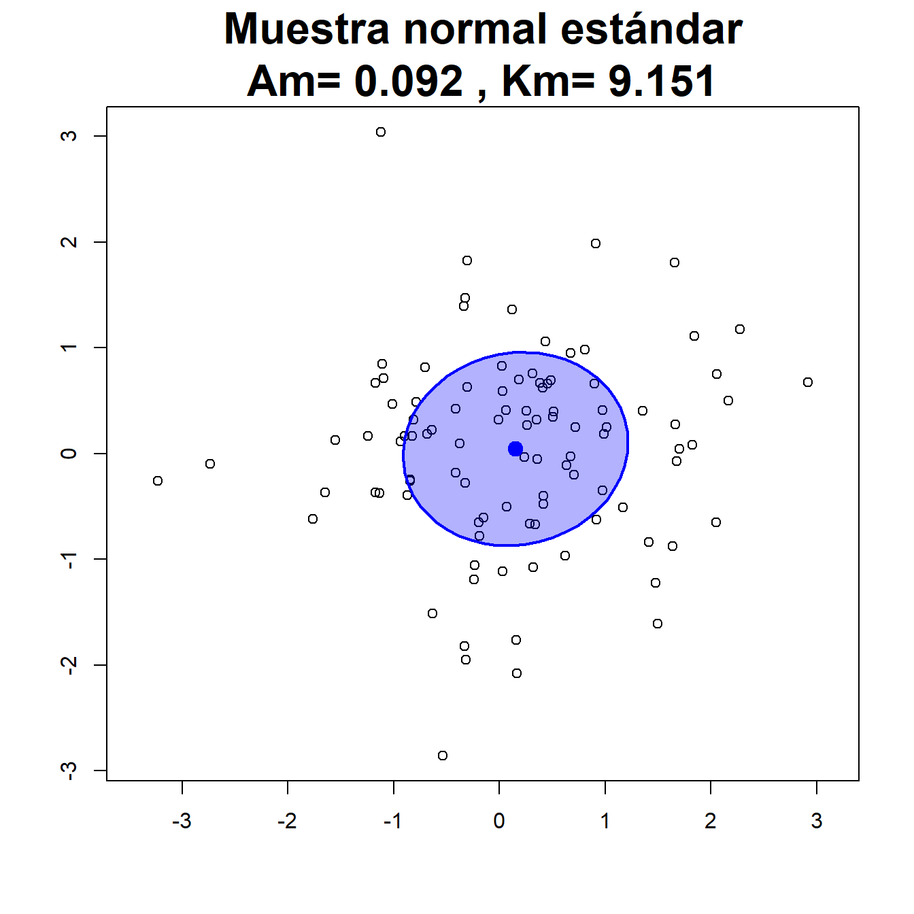
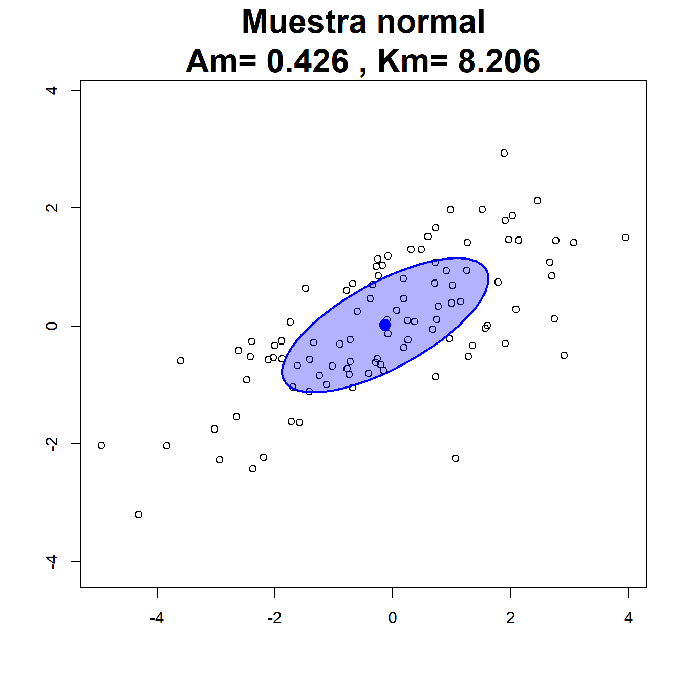
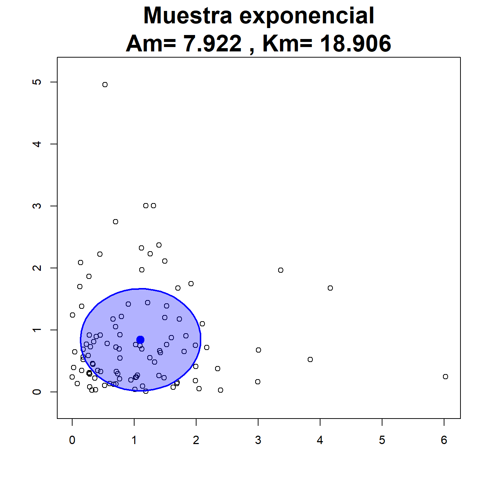
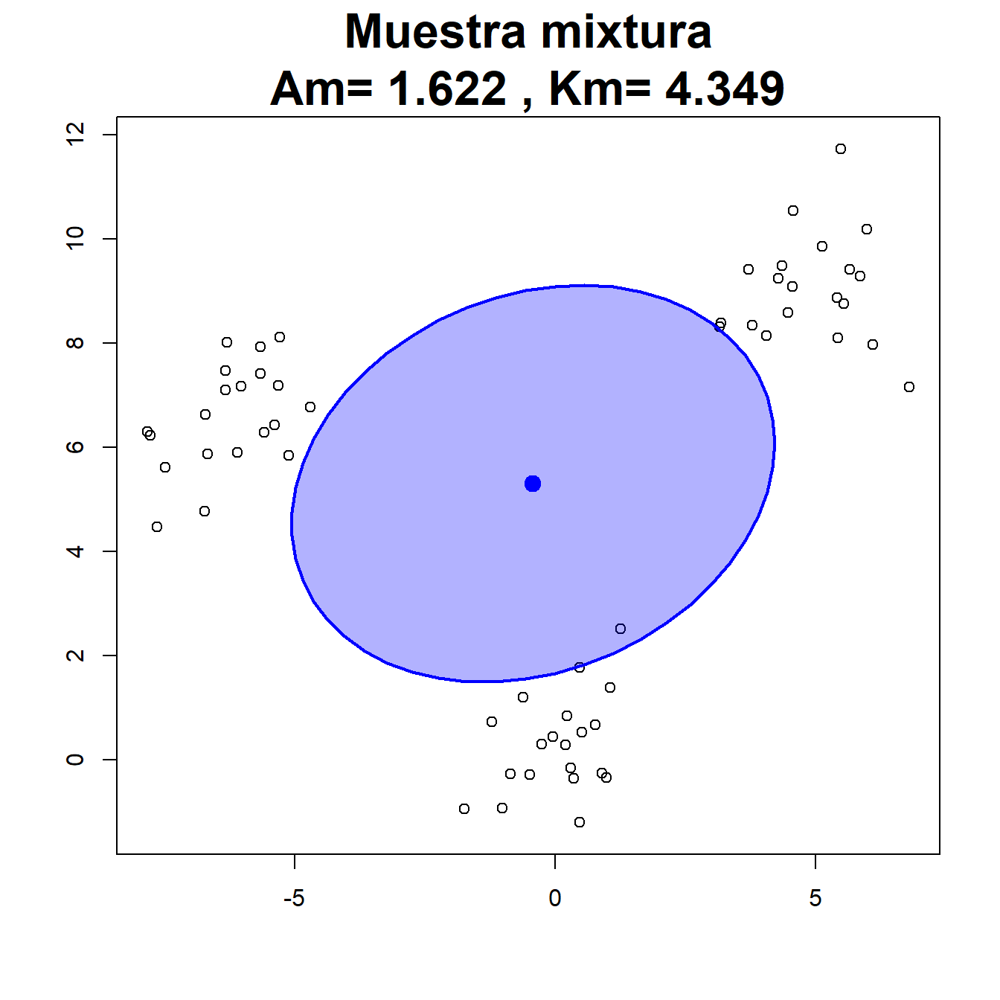
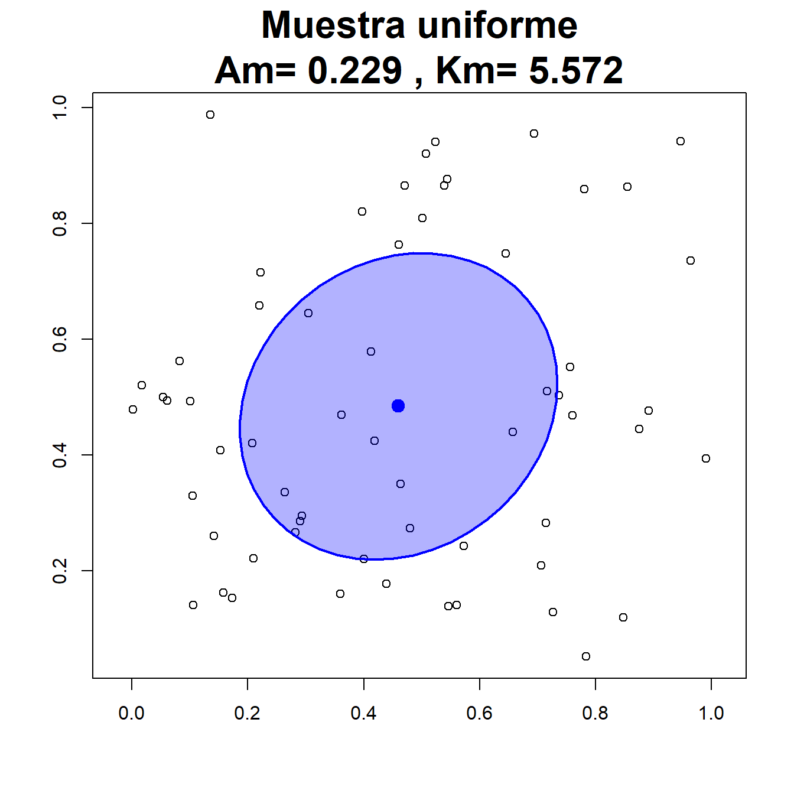
Figura 2.11: Ejemplos de muestras bivariantes para su contraste de normalidad.
2.9.2.2.2 Coeficiente de kurtosis multivariante
El coeficiente de kurtosis propuesto por K. V. Mardia (1970) adopta la forma siguiente: \[K_m=\frac{1}{n}\sum_{i=1}^n r_{ii}^2.\]
A la vista de esta definición, el coeficiente de kurtosis está basado únicamente en los valores \(r_{ii}\). Como \(r_{ii}\) es el cuadrado de la distancia del dato i-ésimo al vector de medias, los valores \(r_{ii}^2\) que figuran en la definición de \(K_m\) son las potencias cuartas de estas distancias.
Por tanto, el coeficiente \(K_m\) generaliza la medida de kurtosis al caso multivariante como estas potencias cuartas de la distancia a la media. De esta manera, para la kurtosis no importará la dirección o sentido de la desviación respecto de la media, sino únicamente la magnitud de dicha desviación. Se trata, pues, de detectar si los datos se agrupan en torno a la Media\(\pm\)Desviación típica, que en el caso multivariante sería la elipse en rojo de la Figura 11, o si por el contrario se agrupan o muy cerca de la media o muy lejos de ésta. Si están cerca de la elipse la kurtosis será pequeña (distribución platicúrtica), y si están o muy cerca de la media o muy lejos de ella, la kurtosis será grande y diremos que la distribución es leptocúrtica.
Igual que en el caso univariante, la distribución normal multivariante presenta un valor intermedio de kurtosis (diríamos que es mesocúrtica). Se puede demostrar que un vector normal \(d\)-dimensional tiene kurtosis multivariante igual a \(d(d+2)\). En la Figura 2.11 se observa que el valor del coeficiente de kurtosis \(K_m\) es próximo a \(d(d+2)=8\) para las muestras normales. Los datos generados de la mixtura de normales y de la uniforme presentan valores menores, y serían platicúrticos. Los datos generados de la exponencial son leptocúrticos.
Respecto del contraste de normalidad, el test basado en la kurtosis rechazará la normalidad tanto para valores demasiado grandes como para valores demasiado pequeños de \(K_m\). De nuevo, los valores críticos están tabulados y los aproximaremos por simulación.
2.9.2.3 Extensión multivariantes del test de Shapiro-Wilk
Existen diversas maneras de extender el test de Shapiro-Wilk. Nos centraremos en una idea muy sencilla, que surge del concepto de invariancia. Así, el vector aleatorio es normal multivariante si y sólo si su estandarización lo es, esto es:
\[\bm{x}\in N_d(\bm{\mu},\bm{\Sigma}) \Longleftrightarrow \bm{z}=\bm{\Sigma^{-1/2}}(\bm{x}-\bm{\mu})\in N_d(\bm{0},\bm{I_d})\]
Lo interesante es que \(\bm{z}\) tiene sus \(d\) componentes (las \(d\) variables) incorrelacionadas, y entonces \(\bm{z}\) es normal si y sólo si sus componentes son normales. Ante tal resultado, basta con comprobar si las \(d\) variables resultantes de la estandarización multivariante son normales. Volvemos entonces a los datos estandarizados:
\[\bm{z_i}=\bm{S^{-1/2}}\left(\bm{x_i}-\overline{\bm{x}}\right)\] siendo \(\overline{\bm{x}}\) la media muestral y \(\bm{S}\) la matriz de covarianzas muestral.
Si \(W_1,\ldots,W_d\) son los estadísticos de Shapiro-Wilk de cada componente de \(\bm{z_1},\ldots,\bm{z_n}\), entonces podemos considerar el estadístico de Shapiro-Wilk multivariante:
\[W_{VG}=\frac{1}{d}\sum_{j=1}^d W_j\] Este estadístico ha sido propuesto por Villasenor Alva y González Estrada (2009). Se rechazará la normalidad cuando \(W_{VG}\) sea pequeño, en comparación con ciertos valores tabulados, que de nuevo podemos aproximar por simulación.
References
El fenómeno de la cola es difícilmente perceptible en la Figura 2.8. Aún así, se puede observar que el trazo rojo, correspondiente a la \(t_5\), se encuentra ligeramente más elevado que el azul, correspondiente a la normal, en las colas. Es una pequeña diferencia a la vista, porque ambas densidades convergen a cero en las colas. Sin embargo, la consecuencia es que la \(t_5\) presenta una frecuencia no despreciable de observaciones muy grandes, cosa que no ocurre con la normal. Estas observaciones grandes (o extremas), al elevarlas a la potencia cuarta, aportan una contribución considerable a la kurtosis.↩︎